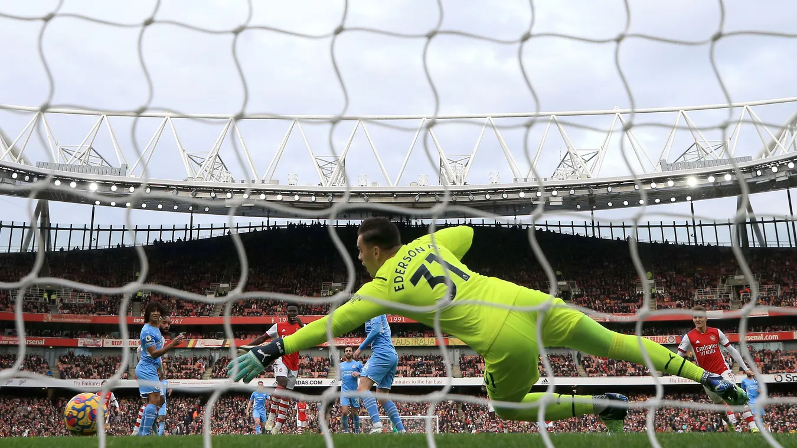
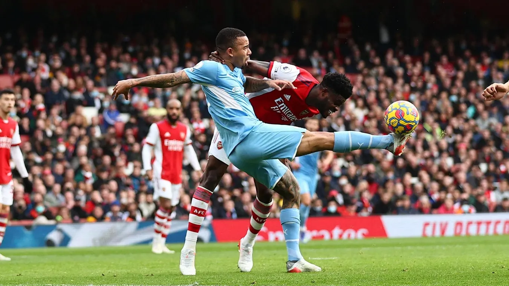
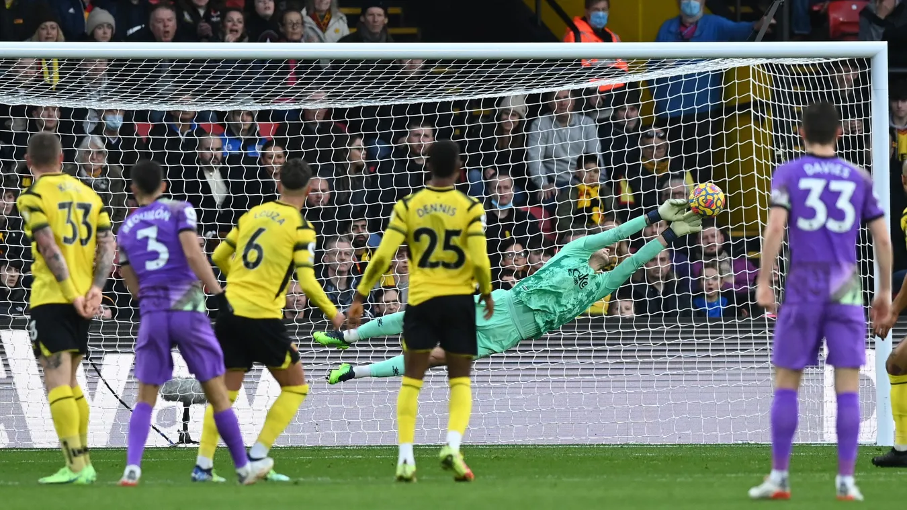
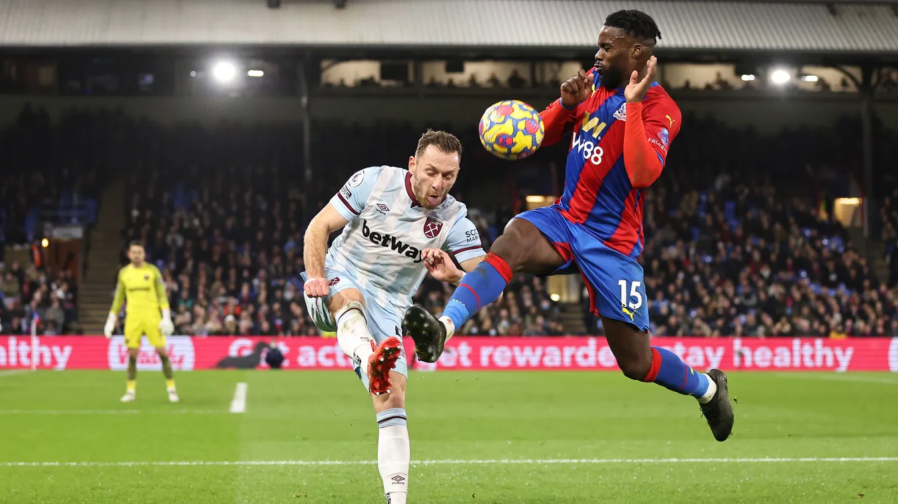
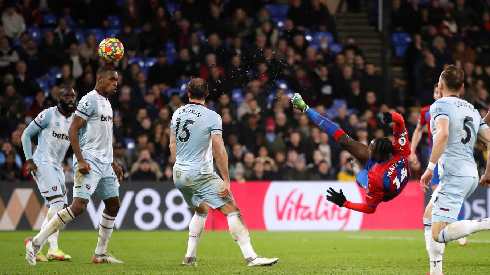
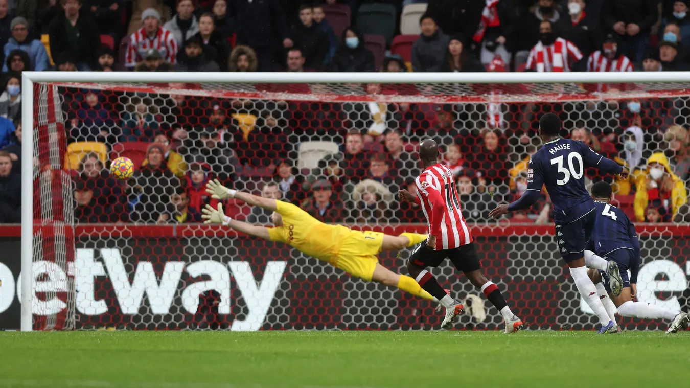
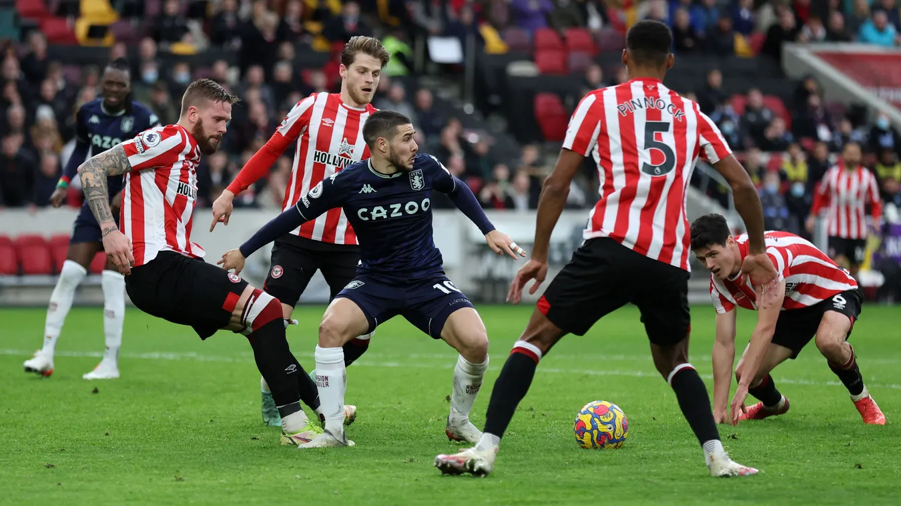
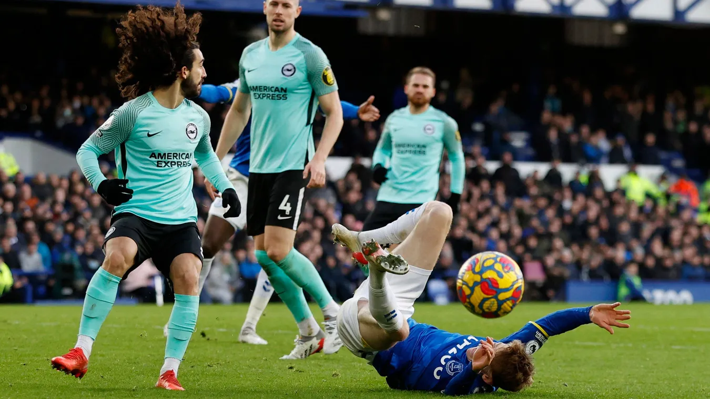
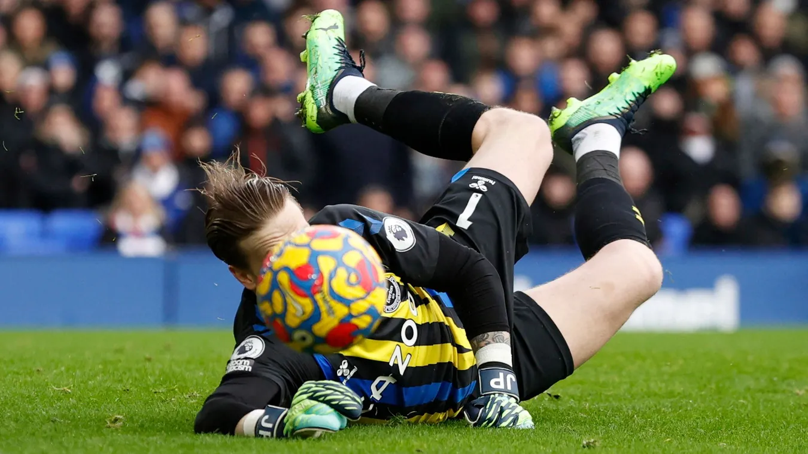
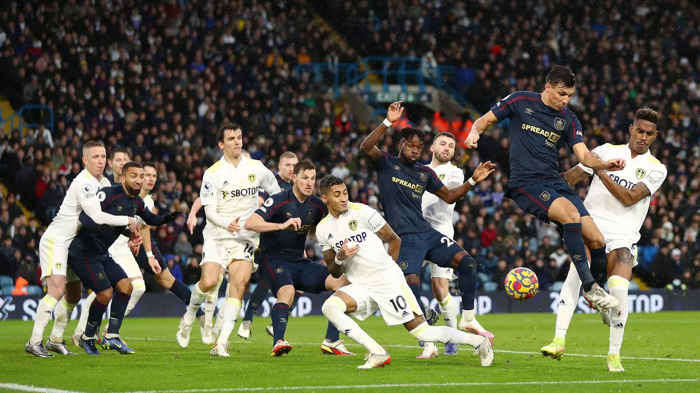

Ederson stretches in vain as Bukayo Saka, second left, nets his fourth goal in three matches to give Arsenal the lead

Arsenal's Thomas Partey bravely tries to head clear from Gabriel Jesus.

Watford's Daniel Bachmann saves at full stretch to deny Sergio Reguilon.

Vladimir Coufal clears the ball before Jeffrey Schlupp can reach it.

Jean-Philippe Mateta's overhead kick goes inches wide with minutes remaining.

Yoane Wissa's strike beats the outstretched arms of Aston Villa goalkeeper Emiliano Martinez

Brentford players swarm around Aston Villa midfielder Emiliano Buendia

Anthony Gordon appeals to the referee after a coming-together with Marc Cucurella.

Everton goalkeeper Jordan Pickford makes a save low to his right during the first half.

Burnley's Jack Cork challenges Leeds defender Junior Firpo in a crowded penalty area.